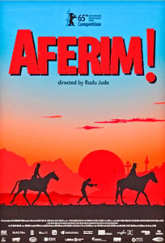

the Romanian Film Festival in Seattle
2nd edition
NOV 20-22, 2015
Nov 19th pre-festival event
-
Rumenye! Rumenye! (Romania, 2006, 58 min, documentary, music). Directed by Radu Gabrea
Nov 19th, 5:30 PM, at Suzzallo/Allen Library, Allen Auditorium. Free screening with limited seating.
One of Radu Gabrea's most celebrated documentaries, Rumenye! Rumenye! retraces the inseparable connection between Jewish, Romani (Gypsy) and Romanian culture, through Klezmer music. Lesser-known crossings, such as between Romanian old melancholic tunes (doina) and the so-called Jewish Blues, are artfully brought to our attention by a team of world-renowned experts. Gabrea collaborated with American musicians and ethnomusicologists Yale Strom, Elisabeth Schwartz, Andy Statman, among many others. The director will be present at the screening and Q&A session. (M.D.) show details
Friday, Nov 20th
-
show all film details
-
Aferim!2015, (comedy, drama), 108 minQ/A with co-screenwriter Florin Lazarescu, Moderated by Monica FilimonAferim!(Romania/Bulgaria/Czech Republic/France, 2015, 108 min, adventure, comedy, drama) Directed by Radu Jude
Romania's entry for the Oscars, winner of the Silver Bear in Berlin this year, Aferim!, deals with a controversial topic, hardly ever explored in cinema before. In 19th century Wallachia (Southern Romania nowadays), a policeman named Constantin (Teodor Corban), is looking for a runaway Gypsy slave, Carfin (Toma Cuzin), accused to have slept with his master's wife. Constantin's adventurous search for the outlaw echoes the western genre, while the cruelty towards society's outcasts brings to mind 12 Years a Slave. The plot is spiced up by colorful language, humorous situations, great music and costumes. Lovers of New Romanian Cinema will be happy to recognize iconic actors Luminita Gheorghiu (Child's Pose; I'm an Old Communist Hag; The Death of Mr. Lazarescu) and Victor Rebengiuc (The Japanese Dog; Medal of Honor; Tuesday, after Christmas). Filmmaker Radu Jude co-wrote the script with writer Florin Lazarescu who will be present at the Q&A sessions. (O.B.)
Opening Cocktail PartyJoin ARCS and the Romanian Film Festival's special guests in celebrating the opening of the festival's second edition. Open doors gala. All are welcome.Saturday, Nov 21st
-
Trading Germans2014, (documentary), 90 minModerated by Monica Filimon
 Trading Germans(Germany/Romania, 2014, 80 min, documentary) Directed by Razvan Georgescu
Trading Germans(Germany/Romania, 2014, 80 min, documentary) Directed by Razvan Georgescu"Jews, Germans, and oil are our best export commodities" - such are the terms that Nicolae Ceausescu, Romania's infamous dictator, allegedly used to boast about the regime's secret scheme of human trafficking. Razvan Georgescu's expository documentary focuses on the mass emigration of ethnic Germans from Romania to Western Germany in the 1970s and 1980s. The process was facilitated by a secret deal with the Federal Republic of Germany, in which the latter paid millions of Deutsche Marks to "buy" ethnic Germans' freedom from an oppressive regime. The film gathers testimonies from former officials and numerous emigres in a fascinating, heart-wrenching expose about a little known chapter of human trade in the history of the Cold War. (G.M.)
Crulic - The Path to Beyond2011, (animation), 73 minModerated by Neely GoniodskyCrulic, The Path to Beyond(Romania/Poland, 2011, 73 min, documentary, animation), Directed by Anca DamianIn her gripping fictionalized documentary, Anca Damian uses a rich variety of animation techniques to bring to life the true story of a Romanian young man who died on a hunger strike, while wrongfully detained in a Polish prison. Romanian New Wave star, Vlad Ivanov (Child's Pose; Police, Adjective; 4 Months, 3 Weeks and 2 Days), narrates Claudiu Crulic's voice over from beyond the grave, adding an eerie touch and well-balanced dark humor to the autobiographical reportage. The tragedy of the story is brilliantly lightened up and distilled by hand-drawn animation, soft watercolor palettes, collages of photographs and scanned documents. Anca Damian has received many awards for her feature, among which the Grand Prix for the Best Domestic Film of 2011, from the Romanian Filmmakers Union, and the prestigious Crystal Prize for Beat Feature at Annecy International Animation Film Festival in 2012. (O.B.)
Closer to the Moon2014, (comedy, drama), 112 minModerated by Monica FilimonCloser to the Moon(Romania/USA/Italy/Poland/France, 2014, 112 min, comedy, drama) Directed by Nae CaranfilLegendary Romanian director Nae Caranfil based his latest feature on a real life story, set in Bucharest, 1959. As Romania is looking for new enemies of the State among members of the Jewish intelligentsia, a police officer (Mark Strong), his former lover (Vera Farmiga), together with three other old comrades from the WWII Resistance, manage to rob the National Bank by pretending they were filming a movie. After their arrest, the secret police forces the prisoners to play in a movie reconstituting their crime. This political farce is seized as a last chance to enjoy life's small pleasures. Caranfil's signature dark humor ironically meets Hollywood-style filming techniques, turning a lesser-known page of Romanian history into a universal tale of survival. Caranfil worked ten years on this story before deciding to film it in English, with British and American actors for most leading parts. (O.B.)
Domestic2012, (comedy, drama), 82 minModerated by Monica FilimonDomestic(Romania/Germany, 2012, 82 min, comedy, drama, family) Directed by Adrian SitaruAbsurdity abounds within a community of cramped apartment flats, as we follow three main characters-Mr. Lazar (Adrian Titieni), Mr. Mihaes (Gheorghe Ifrim) and Toni (Sergiu Costache)-into a series of hilarious situations involving animals. A rabbit, a hen, a cat, a dog and a dove intrude into their domestic space, redirecting their chaotic existence and influencing their personal choices in unexpected ways. Enjoy New Romanian Cinema's talented director's third feature and keep an eye out for his promising work in progress, The Fixer, for which he has just received The Post Republic Reward at The Sarajevo Film Festival this summer. (D.D.)
A Love Story, Lindenfeld2014, (drama), 95 minQ/A with director R. Gabrea and lead actress V. Cocias, Moderated by M. Filimon A Love Story, Lindenfeld(Romania, 2014, 95 min, drama) Directed by Radu Gabrea
A Love Story, Lindenfeld(Romania, 2014, 95 min, drama) Directed by Radu GabreaAcclaimed filmmaker Radu Gabrea based his latest feature on the novelLindenfeld by Ioan T. Morar, following the riveting story of Ulli Winkler (Victor Rebengiuc), from the Swabian-German population of the Banat region in Romania. Ulli has left his village, Lindenfeld, in 1945, at a time of great political insecurity, and grows to be a successful professional in Germany. A TV documentary reminds him of his roots, stirring up the desire to return. As he attempts to restore the deserted village of his youth, Ulli rekindles a 60-year old romance with his childhood sweetheart, Helga. For this part, Victoria Cocias has recently won the distinction of the Best Actress at the International Film Festival Love is Folly, in Bulgaria. Director Radu Gabrea will attend the Q&A sessions accompanied by Victoria Cocias. (M.D.)
Sunday, Nov 22nd
-
Goldfaden's Legacy2004, (documentary), 58 minQ/A with director Radu Gabrea, Moderated by Monica FilimonGoldfaden's Legacy(Romania, 2004, 58 min, documentary, history, music) Directed by Radu Gabrea
This documentary explores the history of Yiddish theater from its inception in 19th century Iasi (Northern Romania) to 20th century New York, as illustrated by the life of its founder, Avram Goldfaden (1840-1908). A true pioneer spirit, the Jewish Romanian writer established the first Yiddish language theater group with six performers, a song cycle, and a vaudevillian structure. At the time of his death in 1908, Goldfaden had reached such a notoriety that about 70,000 people came to pay their last respects, blocking traffic in Manhattan. Radu Gabrea's brilliant use of archival photos, film clips, recordings and live testimonials documents this fascinating journey back in time, highlighting the close relations between Romanian and Jewish cultures, as well as the impact of the New York Yiddish Theater on popular American forms of entertainment. The director will attend the Q&A session. (M.D.)
A Love Story, Lindenfeld2014, (drama), 95 minQ/A with director R. Gabrea and lead actress V. Cocias, Moderated by M. Filimon
A Love Story, Lindenfeld(Romania, 2014, 95 min, drama) Directed by Radu GabreaAcclaimed filmmaker Radu Gabrea based his latest feature on the novelLindenfeld by Ioan T. Morar, following the riveting story of Ulli Winkler (Victor Rebengiuc), from the Swabian-German population of the Banat region in Romania. Ulli has left his village, Lindenfeld, in 1945, at a time of great political insecurity, and grows to be a successful professional in Germany. A TV documentary reminds him of his roots, stirring up the desire to return. As he attempts to restore the deserted village of his youth, Ulli rekindles a 60-year old romance with his childhood sweetheart, Helga. For this part, Victoria Cocias has recently won the distinction of the Best Actress at the International Film Festival Love is Folly, in Bulgaria. Director Radu Gabrea will attend the Q&A sessions accompanied by Victoria Cocias. (M.D.)
Domestic2012, (comedy, drama), 82 minModerated by Ileana MarinDomestic(Romania/Germany, 2012, 82 min, comedy, drama, family) Directed by Adrian SitaruAbsurdity abounds within a community of cramped apartment flats, as we follow three main characters-Mr. Lazar (Adrian Titieni), Mr. Mihaes (Gheorghe Ifrim) and Toni (Sergiu Costache)-into a series of hilarious situations involving animals. A rabbit, a hen, a cat, a dog and a dove intrude into their domestic space, redirecting their chaotic existence and influencing their personal choices in unexpected ways. Enjoy New Romanian Cinema's talented director's third feature and keep an eye out for his promising work in progress, The Fixer, for which he has just received The Post Republic Reward at The Sarajevo Film Festival this summer. (D.D.)
Aferim!2015, (comedy, drama), 108 minQ/A with co-screenwriter Florin Lazarescu, Moderated by Maryna AjajaAferim!(Romania/Bulgaria/Czech Republic/France, 2015, 108 min, adventure, comedy, drama) Directed by Radu JudeRomania's entry for the Oscars, winner of the Silver Bear in Berlin this year, Aferim!, deals with a controversial topic, hardly ever explored in cinema before. In 19th century Wallachia (Southern Romania nowadays), a policeman named Constantin (Teodor Corban), is looking for a runaway Gypsy slave, Carfin (Toma Cuzin), accused to have slept with his master's wife. Constantin's adventurous search for the outlaw echoes the western genre, while the cruelty towards society's outcasts brings to mind 12 Years a Slave. The plot is spiced up by colorful language, humorous situations, great music and costumes. Lovers of New Romanian Cinema will be happy to recognize iconic actors Luminita Gheorghiu (Child's Pose; I'm an Old Communist Hag; The Death of Mr. Lazarescu) and Victor Rebengiuc (The Japanese Dog; Medal of Honor; Tuesday, after Christmas). Filmmaker Radu Jude co-wrote the script with writer Florin Lazarescu who will be present at the Q&A sessions. (O.B.)
Volunteers and Partners Closing GalaVenue: Ten Mercer. By invitation onlyNov 23rd post-festival event
-
American-Romanian Cultural Intersections.
An Evening with Author Florin Lazarescu and Actress Victoria Cocias Nov 23rd, 6:00PM, Bellevue Library, Room 1. Free entry.
Florin Lazarescu reads from his latest novel Amortire (Polirom, 2013). Reading in Romanian. A limited number of books will be available for signing. Renowned actress Victoria Cocias performs as Maria Callas in director Radu Gabrea's internationally acclaimed production of Terrence McNally's play Master Class. The show combines audio-visual projected media with live performed monologues. Performance in Romanian.Event supported by KCLS Diversity Services and the Bellevue Library.
Renowned actress Victoria Cocias performs as Maria Callas in director Radu Gabrea's internationally acclaimed production of Terrence McNally's play Master Class. The show combines audio-visual projected media with live performed monologues. Performance in Romanian.Event supported by KCLS Diversity Services and the Bellevue Library.